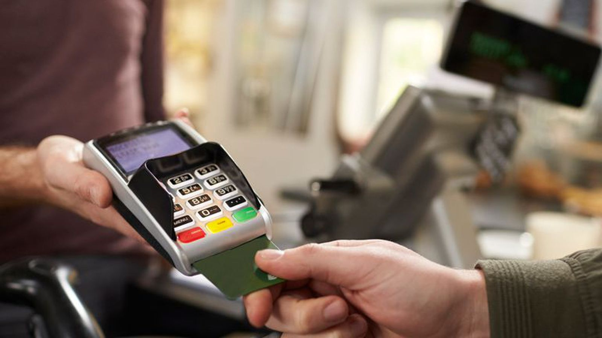
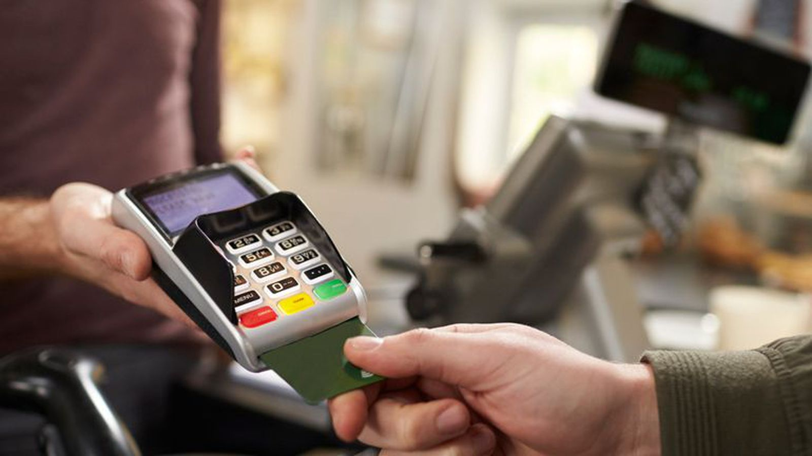
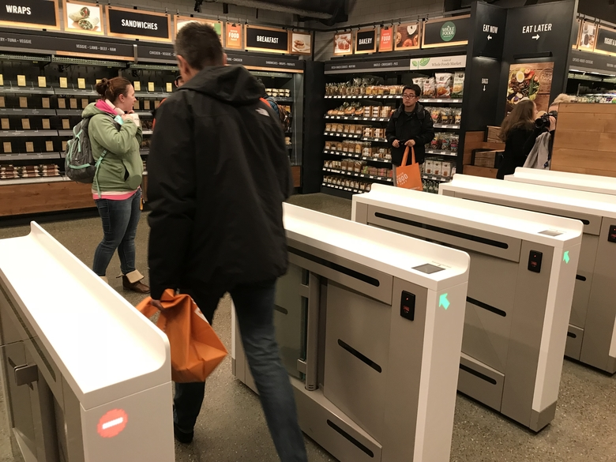
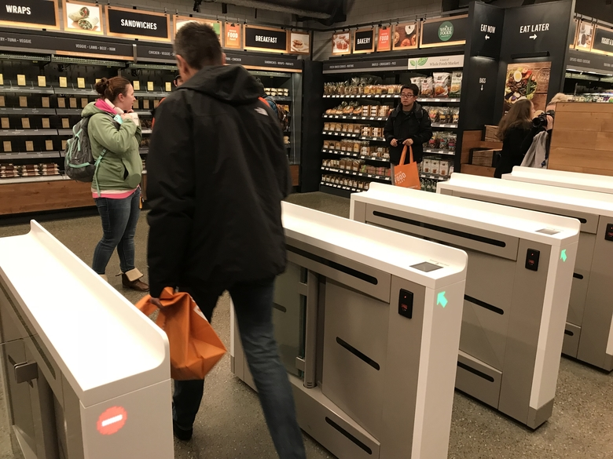

YESTERDAY
First window display
1801
On April 8th Francis Place made a controversial decison; to display his wares behind large plate glass windows at the front of his store on 16 Charing Cross.
Other retailers quickly followed suit, making the stores more of an attraction, and allowing high-end retailers to enagage with non-customers who now "window-shopped" as a form of recreation.
Other retailers quickly followed suit, making the stores more of an attraction, and allowing high-end retailers to enagage with non-customers who now "window-shopped" as a form of recreation.
First shopping mall built
1877
This year end marks the completion of the Galleria Vittorio Emanuele II, containing numerous shops and dining places, the iron-and-glass roofed structure becomes one of Milan's most important shopping districts.
Cash register invented
1879
Invented by James Ritty, the mechanical cash register provided shopkeepers with a more efficient and secure process to monitor sales transactions and inventory.
As result business became even more competitive, with shopkeepers actively adapting their selling strategy to improve profits.
As result business became even more competitive, with shopkeepers actively adapting their selling strategy to improve profits.
Selfridges redefines shopping
1909
The addition of entertainement transforms shopping from functional activity to an enjoyable one. Customers indulge in a public space that provides a wide range of social, cultural and leisure activities.
Shopping carts constructed
1936
Sylvan Goldman noticed that customers often decided to stop shopping once their baskets became too heavy, determined to prevent this he designed a frame with wheels, allowing shoppers to buy more than they could carry.

First modern shopping mall
1956
In Edina, Minnesota a national symbol of car-centric, consumerist, postwar suburbia opened it doors. Southdale Centers' enclosed structure streched across 3 climate-controlled floors connected by escalators, with plenty parking space outside.

Barcodes introduced
1974
The first commercial appearance of barcodes occured at Marsh's Supermarket in Troy, Ohio.
The ability to scan products simplified the checkout process as well as inventory control, saving both customers and store owners time.
The ability to scan products simplified the checkout process as well as inventory control, saving both customers and store owners time.
Online shopping begins
1994
With development of the World Wide Web purchases made using a personal computer starts to become a commonplace occurance. Customers enjoy the convenience of shopping 24/7, while retailers use the online space to "pretail" (testing, building, and managing demand) for their products.
However mistrust of banking security and after-sales services means that many customers prefer to research online and make purchases in-store. Additionally, customers increased ability to compare prices leads to intensified competition.
However mistrust of banking security and after-sales services means that many customers prefer to research online and make purchases in-store. Additionally, customers increased ability to compare prices leads to intensified competition.
Mobile POS systems developed
1995
Cash registers develop into computerised handheld devices allowing cashless payments to be made anywhere within the store.

The inclusion of color-graphical user interface and touch-screen also make it easier for staff to use, while its data collection capability enables store owners to accurately track and forecast sales patterns.

The inclusion of color-graphical user interface and touch-screen also make it easier for staff to use, while its data collection capability enables store owners to accurately track and forecast sales patterns.
Contactless payment available
1997
Cashless payment becomes quicker throught the use of radio-frequency identification (RFID) technology, the ease of payment encourages customers to spend more and spend frequently.

TODAY
PayPal's IPO
2002
PayPal becomes a default payment method, with over 70% of all eBay auctions transacted via PayPal.
Customers and businesses alike are now free to electronically send, receive and hold funds in 25 currencies worldwide.
Customers and businesses alike are now free to electronically send, receive and hold funds in 25 currencies worldwide.
Self-checkout available
2013
A speedier alternative to the cashier-staffed checkout becomes available, the machines allow customers to scan and bag their own purchases unassited.
 This causes shifts the labour market needs; fewer cashiers are required but new staff are required for maintainance and security.
New issues arise due to impacts on customer interaction, accessibility and theft.
This causes shifts the labour market needs; fewer cashiers are required but new staff are required for maintainance and security.
New issues arise due to impacts on customer interaction, accessibility and theft.
This causes shifts the labour market needs; fewer cashiers are required but new staff are required for maintainance and security.
New issues arise due to impacts on customer interaction, accessibility and theft.
iBeacon activated
2013
Apple introduced technology that can detect the presense of mobile phones and trigger location-based action.
Applications include an "indoor positioning system" which is used to calculate approximate real-time location of a shopper within a store.
Applications include an "indoor positioning system" which is used to calculate approximate real-time location of a shopper within a store.
Apple Pay launched
2014
Apple, in partnership with American Express, Mastercard and Visa, reinvent contactless payment by creating a mobile payment service.
Customers can now replace their multiple bank cards with a "digital wallet" on the iOS app, payments are made through Near Field Communication (NFC) technology, offering increase ease of use and security.
Customers can now replace their multiple bank cards with a "digital wallet" on the iOS app, payments are made through Near Field Communication (NFC) technology, offering increase ease of use and security.
Physical instant purchase buttons
2016
The internet of things arrives at washing machines.
Amazon's Dash Replenishment Service (DRS) allows customers to instantly order replacements for home care products with just a push of a button.
Amazon's Dash Replenishment Service (DRS) allows customers to instantly order replacements for home care products with just a push of a button.
Amazon Go public opening
2018
Online retailer Amazon opens a physical grocery store that operates without any cashiers and garantees no queues.

Using computer vision, deep learning algorithms, and sensor fusion the checkout process is fully automated. This revolution in store model aims to streamline customer experience, supply chain and inventory management

Using computer vision, deep learning algorithms, and sensor fusion the checkout process is fully automated. This revolution in store model aims to streamline customer experience, supply chain and inventory management
TOMORROW
What do you think will happen?
????
Let us know: Future of Retail